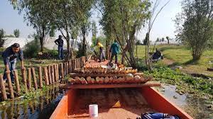
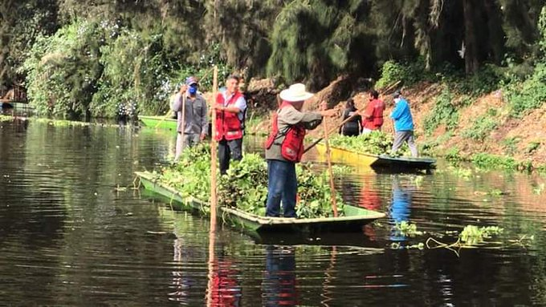

Restauracion
Reforestación: Siembra de Ahuejote.
Para comenzar con el proceso de reforestacion se planea obtener las semillas del ahuejote mediante la compra en viveros locales. Posteriormente para la preparacion de la zona , se planea realizar deshierbes manuales o mecanicos , esto dependera de las condiciones del terreno. Contaremos con cercados en la zonas de cultivo , estos cercos protegeran a los ejemplares de agentes perturbadores como lo son las pisadas.
Para el mantenimiento y monitoreo de los ejemplares se planea realizar deshierbes durante los dos primeros años de habaer establecido la plantacion , con deshierbes en un radio de 20m de la cepa de la planta , preferentemente se planea comenzar una semana o dos antes de la temporada de lluvias.

Para complementar el mantenimiento , se controlara la plaga del gusano de bolsa (Malacosoma incurvum var. azteca) y del muerdago (Cladocolea loniceroides) , para permitir el correcto desarrollo de los ejemplares.
Recuperacion de la zona lacustre.
Reducir los procesos de eutrofización y generación de gases invernadero por medio de acciones de limpieza, desazolve y reapertura de canales, retirando vegetación acuática, lodos y sedimentos, mediante métodos manuales, a fin de recuperar los procesos ecosistémicos del sistema lacustre.
Conservcion del Ajolote
Para la conservacion del Ambystoma Mexicanum se planea reducir las zonas de alto riesgo para la especie y los factores de riesgo que afecten la supervivencia de la especie ademas de delimitar las zonas donde se colocaran puestos de liberacion y de manejo de la especie.La primera de las estrategias planeadas para promover la conservacion y restauracion de la especie , consta del trabajo integral y orientacion de los trabajadores del area turistica para llevar a cabo actividades sustentables asi como entender la importancia ecologica de la flora y fauna nativa de la zona.
Se tiene el conocimiento de la problematica que representan los animales domesticos que invaden el habitat de especies como lo es el ajolote , por lo que se planea una campaña de difusion sobre la tenencia irresponsable de animales domesticos y su impacto al balance ecologico , social y economico de la zona , la finalidad de esta estrategia es promover el cuidado responsable de mascotas para reducir el impacto negativo que se ha generado en el indice de supervivencia de las especies nativas.
Monitoreo
Conteo directo
Para determinar la abundancia del ajolote. Esta técnica se puede llevar a cabo mediante recorridos en los cuales se van contando los individuos observados; además se recopila la información acerca de las condiciones del ecosistema en el cual se han observado los individuos, con el fin de poseer datos que indiquen la influencia de factores externos a las poblaciones.
Seguimiento
Para medir el avance de la reforestación se pretende utilizar algunos indicadores cuantitativos o cualitativos que muestren el estado y evolución del área como se muestran a continuación.
| Período de evaluación | Proceso evaluado | Parámetro indicador |
|---|---|---|
| De 1 a 5 años | Establecimiento de la vegetación implantada | |
| De 5 a 15 años | Desarrollo de la vegetación y reacción de las interacciones planta-suelo |
Estrategias de socialización y divulgación
Costos
Conclusión
Desarrollar un proyecto de restauración ecológica no es un trabajo tan sencillo, se tienen que tomar en cuenta diversos aspectos con la finalidad de plantear la opción más viable, dependiendo del ecosistema, la flora y fauna en peligro de extinción y la ubicación del área.
Al final, es una experiencia muy bonita, el investigar y considerar diversas estrategias, ya que cada ecosistema puede tener diversas formas de restauración y no solo es la reforestación de la vegetación y en el caso de los animales en peligro de extinción, ponerlos en cautiverio o zona de protección, existen muchas más estrategias y cada una tiene un beneficio para la biodiversidad y el área, aunque muchas veces, los proyectos se ven limitados principalmente por el presupuesto. Actualmente muchas empresas e instituciones de gobierno se han interesado en contribuir a diversos proyectos de restauración y medioambientales, sin embargo, aun no es suficiente.
Por lo que se debe de tener más consideración al medio ambiente y contribuir a su cuidado.